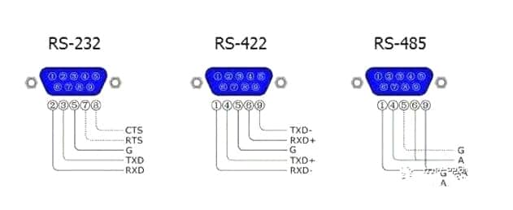
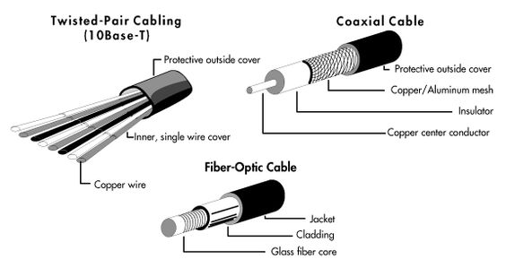
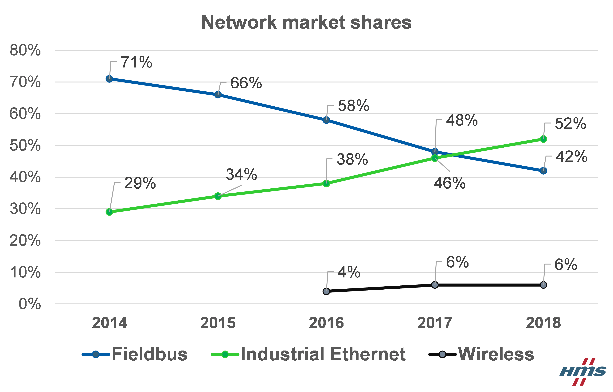
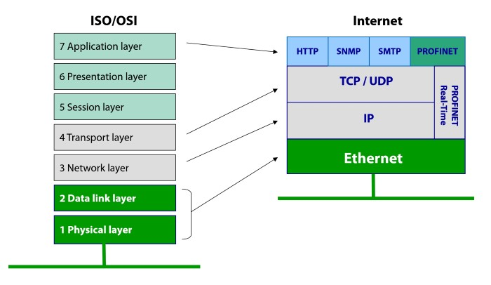

O rețea industrială de comunicație reprezintă elementul de bază pentru orice arhitectură de sistem de automatizare, deoarce acesta oferă un mijloc eficient de interschimbare a datelor, o gestiune mai bună a acestora și o flexibilitate pentru conectarea diferitelor dispozitive. O dată cu utilizarea rețelelor de comunicații digitale în industrie, în ultimul deceniu, s-a observat o îmbunătățire a preciziei și a integrității semnalului digital end-to-end.
Aceste tipuri de rețele care pot fi atât LAN (Local Area Network, care este utilizată în spațiile de dimensiune redusă) cât și WAN (Wide Area Network, care este utilizată ca un sistem global) au permis comunicarea unor cantități vaste de date utilizând un număr limitat de canale. Rețelele industriale au dus și la implementarea diferitelor protocoale de comunicație între controllerele digitale, dispozitivele field, diferite unelte de automatizare precum și a sistemelor externe.
În ultimele decenii, creșterea puterii și scăderea prețurilor sistemelor electronice au influențat cu mult toate domeniile în care activează omul. Același efect se resimte și în cadrul rețelelor industriale de comunicații prin prisma faptului că partea de procesare și fabricație nu se mai realizează mecanic (manual sau prin intermediul controllerelor hidraulice) ci a început să migreze spre utilizarea circuitelor de control cablate, a releelor și a traductoarelor.
Problema cu noile sisteme este aceea că ocupau mult spațiu având dimensiuni destul de ridicate, fiind necesari uneori kilometrii întregi de cablu atât pentru interconexiunea dispozitivelor de pe același nivel din ierarhie precum (actuatori, senzori, etc.) precum și a furniza conectivitate diferitelor nivele. De aceea, o dată cu invenția microprocesoarelor și a circuitelor integrate, diverse funcționalități puteau fi înlocuite printr-un singur controller digital. Migrarea către sistemele digitale a creat necesitatea de noi protocoale de comunicație pentru nivelul field din ierarhia rețelelor industriale de comunicații precum și între controllere. Aceste protocoale de comunicație sunt referite ca fiind protocoale fieldbus.
La începutul anilor 1960, a fost utilizat pentru prima dată un calculator digital sub forma unui controller digital. Acest termen de direct digital control (DDC) a fost utilizat în sensul în care calculatorul are control direct asupra procesului cu care interacționează. Totuși, aplicarea unui mini-calculator în perioada aceea a fost destul de costisitoare pentru majoritatea problemelor de control. Pe la mijlocul anilor ’60, a fost dezvoltat PLC-ul (programmable logic controller) și a înlocuit controllerele bazate pe relee, având un numar relativ limitat de funcții de control. Odată cu expansiunea utilizării calculatoarelor digitale și a tehnologiilor asociate, rețelele industriale de comunicații au început să fie dezvoltate (sau convertite) prin intermediul transmisiei digitale, fiind utilizate în industrie o dată cu prima conexiune realizată între două calculatoare.
La mijlocul anilor ’70, primul distributed computer control system (DCCS) a fost anunțat de către Honeywell ca un sistem ierarhic de control cu număr ridicat de microprocesoare. De la introducerea din 1970, conceptul de DCCS a fost distribuit la scară largă în multe sisteme industriale automatizate precum sisteme de fabricare, sisteme de control a centralelor electrice, etc. Instalarea sistemelor de control distribuite sau înlocuirea sistemelor centralizate de control devine o decizie comună pentru gestiunea marilor companii.
Utilizarea rețelelor locale (LAN) pentru a interconecta calculatoare și dispozitive de automatizare în sistemele de automatizare industrială și-a câștigat popularitatea începând cu anul 1980. Capacitatea crescută și costurile scăzute în comunicație oferită de rețelele locale a făcut ca distribuirea părții computaționale să devină o realitate precum și a serviciilor de automatizare. În prezent, a devenit comună utilizarea rețelelor locale pentru a comunica cu calculatoarele și cu dispozitivele de automatizare din cadrul altor rețele locale prin intermediul unui gateway făcând parte și fiind interconectate de o rețea globală (WAN).
O dată cu creșterea sistemelor de automatizare industriale și a numărului de dispozitive de automatizare, s-a creat o necesitate în vederea furnizării unor standarde pentru a permite dispozitivelor diferite să fie interconectate într-un mod standardizat. Standardele Open System Interconnection (OSI) permit oricărei perechi de dispoztiive de automatizare să comunice într-un mod reliable fără să aibă vreun impact producătorul asupra comunicației.
Rețelele industriale de comunicații se întind pe o plajă largă de aplicații de fabricație. Rețelele standard industriale care folosesc tehnologii de comunicație digitală acoperă majoritatea aplicațiilor de fabricație. În multe aplicații, tipul de dispozitive utilizate și performanța acestora determină tipul rețelei. Spre exemplu, în cadrul unei fabrici poate să existe un senzor de proximitate care oferă o informație booleană on/off indicând proximitatea obiectului și o valvă de control utilizată la rafinarea petrolului care poate furniza funcții de control sofisticate precum temperatura ambientală. Acești parametrii pot deveni extrem de critici, spre exemplu eșuarea rafinării, care pot rezulta în situații periculoase și costisitoare. În mod clar, senzorul de proximitate și valva de control au cerințe diferite de rețea. Deci, tipuri diferite de rețele industriale trebuie să adreseze o varietate largă de necesități și pentru a îndeplini toate cerințele aplicației trebuie să selecteze o rețea potrivită.
Sistemele industriale de automatizare pot fi foarte complexe și de regulă acestea sunt structurate în mai multe nivele de ierarhizare. Fiecare dintre aceste nivele ierarhice are un nivel de comunicație corespunzător, care plasează diferite cerințe în cadrul rețelei de comunicație. Rețelele industriale pot fi clasificate în mai multe categorii diferite în funcție de funcționalitate:
Nivelul cel mai de jos din cadrul ierarhiei este field level, care include dispozitivele field precum actuatori sau senzori. Dispozitivele elementare din acest nivel sunt clasificate ca "element sublevel". Cerința pe care aceste dispozitive trebuie să o îndeplinească este de a transfera date între aceste dispozitive și elemente de proces tehnice precum PLCs. Datele transmise pot fi atât binare cât și analogice sau o combinație între acestea două, iar valorile măsurate pot fi disponibile pentru perioade scurte de timp sau pentru perioade lungi de timp.
La nivelul comunicației sunt utilizate la scară largă, interfețele paralele, cu cabluri multiple, cele seriale precum 20mA current loop. Standardele de comunicație serială precum RS232C, RS422, RS485 sunt cele mai comune și utilizate protocoale împreună standardul paralel de comunicație IEEE488.
Diferențele majore între aceste 3 tipuri de interfețe sunt:
Rețelele industriale field-level reprezintă o categorie largă, care poate fi distinsă prin caracteristici precum dimensiunea mesajelor și timpul de răspuns. În general, aceste rețele conectează dispozitive inteligente care lucrează împreună într-un mediu distribuit, critic din punct de vedere al timpului. Acestea oferă un nivel ridicat de diagnoză și capabilități de configurare având ca preț utilizarea mai multor resurse precum putere de procesare, inteligență și bani. La nivelul cel mai "sofisticat", rețelele field-bus utilizează dispozitive cu adevărat inteligente, distribuite de control precum FOUNDATION Fieldbus. Câteva rețele incluse în clasa de fieldbus și devicebus sunt: CANOpen, DeviceNET, FOUNDATION Fieldbus, Interbus-S, Profibus-DB, etc. În prezent, fieldbus este utilizat des pentru transferul de informații la field-level. Din cauza cerințelor legate de timp, care trebuie să fie observate în mod strict într-un proces de automatizare, controllerele de la acest nivel trebuie sa transmită periodic informații la intervale regulate de timp. Iar datele transmise trebuie să fie de dimensiuni cât mai reduse pentru a reduce timpul de transfer acestora pe magistrală.
La nivelul de control, fluxul de informație constă în principal din încărcarea programelor, a parametrlor și a datelor. Acest nivel conține controllere industriale precum PLCs, unități distribute de control și sisteme de calcul. Acesta este divizat la rândul lui în două sub-nivele și anume Cell sublevel, respectiv Area sublevel.
Pentru operațiile realizate la acest subnivel, sincronizarea mașinăriilor și gestionarea evenimentelor pot creea cerințe de a avea timp de răspuns cât mai scurt pe magistrală. Aceste cerințe real-time nu sunt compatibile cu transferul excesiv de aplicații de program, de aceea este necesară o segmentare adaptivă a mesajelor. Pentru a putea îndeplini cerințele de comunicație în cadrul acestui nivel, sunt utilizate rețele locale (LANs) ca și rețea de comunicații. După introducerea conceptului de CIM și DCCS, multe companii au început să-și dezvolte rețelele proprii pentru nivelul cell a unui sistem de automatizare.
Protcolul Ethernet împreună cu TCP/IP (transmision control protocol/internet protocol) au devenit standardul de facto pentru acest nivel, chiar dacă nu poate furniza o comunicație real-time. Au existat numeroase încercări pentru a furniza o standardizare pentru rețeaua de comunicație de la acest nivel. Astfel, standardul IEEE bazat pe arhitectura OSI a fost dezvoltată și s-a realizat rețeaua Mini-MAP în anul 1980 pentru a furniza o comunicație standard pentru diferite dispozitive a diferiților furnizori. Totodată, câteva fieldbusses pot fi folosite pentru acest nivel.
Acest subnivel constă din celule combinate în grupuri, fiecare din aceste celule fiind proiectate cu o funcționalitate orientată pe aplicație. Sunt utilizate rețele control-level pentru rețtele peer-to-peer între controllere precum programmable logic controllers (PLCs), sisteme distribuite de control (DCS) și sisteme utilizate pentru interfața om-mașină (HMI). Totodată, pentru coordonare și sincronizarea controlului între unitațile de producție și celulele de fabricație sunt utilizate legături de tip magistrală. Iar exemple de rețele industriale utilizate pentru bus-urile de control sunt: ControlNet, PROFIBUS-FMS și MAP (în trecut), putând fi utilizate frecvent și Ethernet cu TCP/IP ca un controller de tip magistrală pentru a conecta dispozitivele de control de la nivelele superioare cu calculatoarele.
Nivelul de informație este nivelul cel mai de top din ierarhia specifică unui sistem industrial de automatizare. În cadrul acestui nivel se adună informații de management de la area levels și gestionează întregul sistem de automatizare. Cantitatea de date este ridicată, astfel că la acest nivel nu sunt prezente cerințe critice de timp sau utilizare constantă de resurse. La nivelul de informație există rețele la scală largă, de exemplu Ethernet WAN pentru planificarea fabricării produselor și gestiunea schimbului de informație. Se poate utiliza Ethernet ca gateway pentru conexiunea cu alte rețele industriale.
Datele transmise într-o rețea industrială de comunicație pot fi atât în format digital cât și format analogic. Diferența dintre cele două fiind că în comunicațiile digitale datele poate lua doar forma unor valori binare 0 și 1, iar în cazul comunicațiilor analogice datele sunt reprezentate sub forma unei unde eletromagnetice (de regulă sinusoidale) continue care își schimbă valorile în timp. Aceste valori sunt corespunzătoare de regulă unor nivele de tensiune (de ex. 0V-5V) sau de curenți (4-20mA) care vor fi ulterior convertiți în nivele de tensiune prin înmulțirea cu o anumită rezistență (de ex. 250Ohm). Abordarea pe bază de curenți este mai fezabilă decât cea bazată pe tensiune din cauza atenuării pe care acesta o întâlnește de-a lungul mediului de transmisie. Totodată, pentru a distinge nivelul '0' logic, se utilizează intervalul 4-20mA în loc de 0-20mA, deoarece intervalul 0-4mA este utilizat pentru a determina dacă s-a rupt vreun cablu sau nu există conexiune și a rezultat într-un circuit deschis.
Transmisia efectivă poate fi asincronă sau sincronă, în funcție de modul în care sunt transmise datele. În transmisia asincronă, caracterele sunt transmise utilizând biți de start și stop, iar fiecare caracter poate fi transmis independent cu o rată de transmisie neuniformă. Transmisia sincronă reprezintă o metodă mai eficientă. Datele sunt transmise sub forma unor blocuri de caractere, iar transmiterea și recepționarea fiecărui bit este cunoscut dinainte din cauza faptului că ceasurile transmițătorului și a receptorului sunt sincronizate.
Metodele de transmisie în rețelele industriale de comunicații includ metode baseband, broadband, respectiv carrierband.
Tipul sistemului de cablare fizic și a mediului de transmisie reprezină un factor foarte important în alegerea unei anumite rețele industriale de comunicație. Mediul de trasmisie cel mai comun utilizat este firul de cupru, sub formă de cabluri coaxiale sau torsadate, fiind utilizate în anumite cazuri și fibra optică sau tehnologii wireless. 
Astfel, în funcție de cerințele proceselor din cadrul unei industrii, de vitezele necesare, de timpul de răspuns și a tuturor parametrilor implicați, trebuie ales în detaliu tipul de echipament utilizat la nivel de medii de transmisie, interfețe și moduri de transmisie.
În rețelele industriale mari sau fabrici, un singur cablu nu este suficient pentru a conecta toate echipamentele intra-level, respectiv inter-level. Fiecare senzor, actuator, ,valve, PLC-uri, HMI-uri, roboți SCARA, CNC machines, motoare AC/DC, practic orice tip de echipament care deservește un anumit serviciu trebuie să fie conectat pentru a transmite datele capturate și pentru a obține procesul final dorit al întregului ansamblu. De aceea, trebuie definite diverse topologii și proiectate rețelele în așa fel încât să furnizeze izolare și să se îndeplinească cerințele de performanță. În multe cazuri, aplicațiile trebuie să comunice în diverse moduri, astfel trebuie adăugate echipamente de rețea adiționale. Câteva din echipamentele prezente într-o rețea industrială de comunicații sunt prezentate mai jos:
Sistemele industriale constau din unul sau mai multe dispozitive. Pe măsură ce aceste sisteme industriale cresc, sunt necesare diverse topologii de rețele pentru a organiza și structura întreaga rețea. O topologie, pe scurt, reprezintă modul de organizare a echipamentelor (cabluri, routere, switch) pentru a deservi un anumit serviciu. Există diferite standarde pentru aceste topologii și anume: stea, inel, mesh, magistrală, stea extinsă sau combinații de acestea. Într-o rețea industrială de comunicații, sunt prezente trei tipuri de topologii principale: stea, magistrală și inel.
O configurație stea constă dintr-un controller central, la care sunt conectate toate nodurile. Acest tip de organizare permite conexiunea relativ ușoară pentru rețele de dimensiuni medii spre mici, dar trebuie adăugate controllere adiționale dacă se ajunge la numărul limită al controllerului principal. Unul din avantaje este acela că, distrugerea unui dintre noduri nu afectează celalalte noduri, într-o astfel de configurație.
Topologia stea are un hub (concentrator) în centru ce joacă rolul de controller. Un hub este practic un repetor multiport care amplifică semnalul și îl transmite la toți cei conectați, în cazul neinteligent, iar in cazul inteligent transmite doar destinatarului pachetului respectiv. Prin intermediul acestei topologii, se pot adăuga cu ușurintă alte noduri în rețea fără să se întrerupă conectivitatea între nodurile deja existente. Unul din marile dezavantaje într-o astfel de topologie este single point of failure (SPF) în cazul hub-ului, dacă acesta este distrus, întreaga conexiune se pierde.
O configurație de tip magistrală constă dintr-un singur mediu de transmisie (de regulă cablu coaxial) care este partajat de mai multe dispozitive, iar conexiunea se realizează prin joncțiuni de tip T, sau conectori vampir. Mesajele transmise pe magistrală sunt recepționate de fiecare din noduri. Dacă un nod este distrus, restul rețelei continuă sa opereze atâta timp cât distrugerea nodului nu afectează în vreun fel mediu de transmisie partajat. La capetele cele două ale mediului de transmisie trebuie să existe doi terminatori fără de care transmisia nu ar putea avea succes, semnalul fiind pierdut pe mediu.
Unul dintre avantajele acestei topologii este prețul scăzut pentru echipamente, fiind necesar doar un singur mediu de transmisie, acesta fiind partajat precum și ușurința în implementare. Ca dezvantaj, această topologie prezintă o transmisie relativ lentă comparativ cu celelalte topologii din cauza CSMA/CD care este prezent în topologiile de tip bus, unde pot exista coliziuni, întârzierea semnalului și retransmiterea semnalului de către transmițător.
În topologia de tip inel, mediul de transmisie formează un cerc (inel), iar nodurile sunt atașate la anumite distanțe unele de celelalte de-a lungul inelului, Mesajele sunt transmise începând cu stația cu MAC-ul cel mai mare, care va primi token-ul inițial. După ce acesta și-a transmis datele, va transmite token-ul la următoarea stație în funcție de o anumită regulă sau în sensul ceasului. Pentru a preveni ca o stație să dețină pentru o perioadă prea lungă de timp token-ul, sunt implementați diferiți algoritmi prin care se limitează timpul pentru fiecare stație.
Unul din principalele dezvantaje în cazul acestei topologii este că distrugerea unuia dintre noduri cauzează pierderea conectivității din întreaga rețea. Totuși, pentru a preveni acest lucru există mecanisme de recuperare prin care se poate "neutraliza" nodul respectiv, iar conexiunea să rămână stabilă în continuare.
Pentru majoritatea rețelelor utilizate în aplicațiile industriale, se pot utiliza topologii hibride ca o combinație între topologiile stea și magistrală pentru a crea rețele mult mai mari de până la sute sau mii de dispozitive. Se pot configura o multitudine de rețele industriale populare(menționate și în capitolele trecute), precum: Ehternet, FOUNDATION Fieldbus DeviceNet, Profibus și CAN utilizând astfel de combinații în funcție de cerințele aplicației. Și în cadrul acestor tipuri de topologii hibride, există avantaje și dezvantaje. Totuși, pentru a elimina unele dezavantaje se poate configura topologia astfel încât eșecul sau distrugerea unui dispozitiv să nu influențeze alte dispozitive (avantajul topologiei magistrală), precum și prin intermediul acestei combinații se pot adăuga noduri în rețea fără a influența alte noduri deja existente (avantajul topologiei stea).
În zilele noastre, este extrem de dificil ca o industrie să funcționeze fără sisteme de tip Ethernet sau Fieldbus. Fieldbus este un sistem de rețea industrială pentru control distribuit în timp real și reprezintă o modalitate de conectare a instrumentelor dintr-o fabrică. Ethernet este o familie de tehnologii de rețele de calcul utilizate frecvent în rețelele locale (LAN), rețelele metropolitane (MAN) și rețelele de suprafață largă (WAN). Aceste sisteme furnizează un set de reguli (un protocol de comunicație) pentru a determina cum este transmisă informația într-o rețea de dispozitive, controllere, calculatoare și alte sisteme. Cu astfel de protocoale de comunicație îmbunătățite, este posibil ca acum să se reducă timpul necesar pentru transferul datelor, asigurarea unei mult mai bune securități a datelor, garantarea sincronizării acestora, precum timp de răspuns real-time, deterministic în unele aplicații. Rețelele industriale de comunicații asigură totodată că sistemul transmite informația într-un mod reliable, fără erori și într-un mod sigur între nodurile din rețea. De-a lungul anilor, o multitudine de astfel de sisteme au fost dezvoltate de la Modbus și Ethernet până în zilele noastre, sisteme precum:
În figura alăturată se pot observa tendințele și procentajul de utilizare în industrie a fiecărui sistem în parte a anului 2019 comparativ cu anul 2018, astfel că în anul 2019 standardele industriale Ethernet reprezintă 59% din nodurile instalate comparativ cu tehnologiile de tip Fieldbus cu un procentaj de 35%. Aceste detalii sunt date de către HMS Networks, o companie suedeză independentă care operează la nivel global. Anul 2019 este primul an în care fieldbuses vor avea parte de o rată de creștere negativă în noile noduri instalate, pierzând 5% în anul 2019, comparativ cu creșterea de 6% din anul 2018. Iar la nivel de tehnologii wireless, acestea se mențin la 6% având o creștere de 30% în fiecare an de noduri.
Procentajul de dominație a Ethernet-ului industrial a crescut constant în ultimii 4 ani (2014-2018). După cum se poate vedea în figura alăturată, cota de piață a nodurilor noi instalate în cazul Ethernet-ului a crescut de la 29% la 59%, iar pentru Fieldbuses a scăzut de la 71% la 35%, conform HMS. Această creștere bruscă se datorează în principal răspândirii rapide a soluțiilor IoT. Din cauza noilor echipamente conectate, a senzorilor și a datelor transmise între acestea, necesitatea pentru lățime de bandă a crescut mult, iar Ethernet poate îndeplini aceste necesități, ajungând la viteze de gigabits pe secundă.
Piața pentru rețelele industriale de comunicații rămâne încă fragmentată. Precum Fieldbuses, soluțiile Ethernet industriale nu s-au standardizat într-un singur protocol. De fapt, fiecare rețea deservește diferite aplicații specifice necesităților.
EtherNET/IP este cel mai popular protocol Ethernet cu 15% din cota de piață a nodurilor instalate în anul 2019, următorul fiind foarte apropiat cu 14%, Profinet. EtherCAT se situează la 7%, Powerlink la 5%, iar Modbus-TCP la 4%. Restul tehnologiilor Ethernet reprezintă 14% din întreaga cotă de piață.
Profibus DP este cel mai popular protocol din familia Fieldbuses, ocupând 10% din cota de piață. CC-Link și Modbus-RTU ocupă 6%, respectiv 5%, iar CanOpen împreună cu DeviceNET își mențin procentajul de 3%. Restul tehnologiilor Fieldbus ocupă 8% din întreaga cotă de piață.
Tehnologiile wireless au avut o creștere impresionantă de 30% sau mai mult în ultimii ani, deși acestea reprezintă încă un procentaj mic din întreaga cotă de piață. Între aceste protocoale, WLAN este cel mai popular având 4%, Bluetooth și alte tehnologii wireless ocupând 1%.
De-a lungul globului, regiunile au preferințe diferite pentru rețelele industriale. În SUA, rețelele cele mai populare sunt cele care suportă CIP(Common Industrial Protocol), respectiv Ethernet care domină. EtherCAT crește și el în această regiune. În Europa și Orientul Mijlociu, EtherNET/IP și PROFINET sunt liderii, PROFIBUS fiind încă comun. În Asia, nu este un lider clar, dar PROFINET, EtherNET/IP, PROFIBUS, EtherCAT, Modbus și CC-Link sunt destul adaptate pe scară largă.
Dintre toate protocoalele menționate în capitolul anterior, vor fi prezentate în continuare primele 3 cele mai utilizate protocoale în detaliu:
PROFIBUS (Process Field bus) este un standard pentru comunicațiile de tip fieldbus, a fost dezvoltat în anul 1989 de către BMF (German department of education and research), fiind utilizat ulterior de Siemens. Acest protocol este responsabil pentru furnizarea comunicației între senzori și sistemul de control sau controllere. PROFIBUS utilizează topologia de tip magistrală , având un cablu principal conectat în întreg sistemul, unde dispozitivele sunt conectate. Prin intermediul acestei topologii, se elimină necesitatea de a avea cabluri de la controllerul principal până la fiecare dispozitiv individual. Ideea principală a fost ca prin intermediul soluțiilor implementate PROFIBUS să se creeze un standard pentru industriile de automatizare, fabrici, etc. Primul protocol PROFIBUS a fost numit PROFIBUS FMS (Field Message Specification) utilizat pentru comunicație non-deterministă a datelor între profibus masters, dar care nu a câștigat popularitate din cauza complexității acestuia și nu a fost utilizat în industrie pentru o perioadă îndelungată de timp (în prezent nu mai este utilizat).
În anul 1993, a fost creeat protocolul PROFIBUS DP (Decentralized Peripherals), iar în anul 1998 protocolul PROFIBUS PA (Process Automation). PROFIBUS PA, pe scurt, este utilizat pentru a monitoriza echipamente de măsurare printr-un sistem de control în aplicațiile de automatizare. Această variantă de PROFIBUS este utilizată cu preponderență în zonele unde pot apărea explozii sau există substanțe chimice periculoase. PA operează cu mediul de transmisie RS485 care permite transmisia de putere pe bus. În medii explozive, puterea transmiă poate crea scântei care să inducă astfel de explozii, iar pentru a gestiona astfel de cazuri,PROFIBUS PA poate fi utilizat împreună cu Manchester Bus Powered (MBP) technology.
Comparativ cu modelul ISO/OSI, PROFIBUS utilizează 3 nivele separate din acest model. În primul, PROFIBUS descrie nivelul aplicație unde pot apărea diferite tipuri de mesaje (FMS, DP-V0, DP-V1, DP-V2). Primul referindu-se la PROFIBUS FMS, iar celelalte 3, la PROFIBUS DP care includ schimb de date aciclic, diagnosticare și alarm-handling, precum și mesaje isochronous. Nivelel de la 3 la 6 nu sunt definite în cadrul PROFIBUS, totuși, sunt definite nivelul data link și physical. Nivelul data link se numește FDL (Field bus Data Link), iar acesta combină două scheme comune de transmisie și anume metodologia master-slave și token-passing. Într-o rețea master-slave, controllere transmit request-uri la senzori și actuatori, iar aceștia răspund corespunzător. PROFIBUS inlcude si metodologia de token token-passing, în care un semnal de "token" este transmis între noduri, putând să comunice doar nodul care deține token-ul. Ultimul nivel în cazul PROFIBUS este destul de flexibil, permițând diferite medii de transmisie precum cablurile torsadate cu interfața RS-485, fibră-optică, respectiv sistemul Manchester Bus Power (MBP) pentru mediile în care există posibilități de explozii.
Prin intermediul PROFIBUS DP care este un protocol de "descentralizare a perifericelor", se pot separa modulele de I/O față de controllere (PLCs). Astfel, în cazul unei fabrici de dimensiuni mari în care senzorii se află la distante de 300-500 metri, în loc să fie trase o multitudine de cabluri de la fiecare senzor către PLC, modulele de I/O pot fi mutate în nivelul field aproape de senzori, acestea fiind numite remote I/O. Având toți senzorii și modulele de I/O într-un singur loc, partea de cablare este redusă semnificativ, iar de la I/Os remote este tras un singur cablu RS-485 care să transfere toate datele către controllerul principal.
Prin intermediul PROFIBUS DP care este un protocol de "descentralizare a perifericelor", se pot separa modulele de I/O față de controllere (PLCs). Astfel, în cazul unei fabrici de dimensiuni mari în care senzorii se află la distante de 300-500 metri, în loc să fie trase o multitudine de cabluri de la fiecare senzor către PLC, modulele de I/O pot fi mutate în nivelul field aproape de senzori, acestea fiind numite remote I/O. Având toți senzorii și modulele de I/O într-un singur loc, partea de cablare este redusă semnificativ, iar de la I/Os remote este tras un singur cablu RS-485 care să transfere toate datele către controllerul principal. Un alt avantaj îl prezintă faptul că datele prin RS-485 sunt transmise digital, față de datele transmise de la senzori astfel, se reduc pierderile și atenuările care pot apărea din cauza interferențelor.
Pe lângă toate aceste avantaje, există și dezvantaje din cauza faptului că, cablul RS-485 reprezintă un SPF (single point of failure), dacă acesta este distrus sub orice formă, toate datele sunt pierdute. Pentru a rezolva această problemă, se mai poate adăuga un cablu RS-485 pentru redundanță care să fie legat la cea de-a doua interfață a PLC-ului. Sau, în alte industrii se abordează și o soluție de a atașa direct senzorii principali cu datele cele mai imporante direct la PLC, iar restul la remote I/O. Astfel, dacă se întâmplă ceva cu cablul principal, datele importante nu vor fi pierdute.
PROFINET este un protocol industrial de comunicație Ethernet-based proiectat pentru colectarea de date de la senzori, actuatori, cititoare RFID, sau chiar alte controllere și transporate către sistemele de control (PLCs). Interfața utilizată pentru în cazul acesta este RJ-45, spre deosebire de PROFIBUS care utilizează RS-458. Unul din marile avantaje ale PROFINET este viteza, având un timp de răspuns mai mic de 1 milisecundă. Pe scurt, PROFINET reprezintă o evoluție a PROFIBUS prin simplul fapt că utilizează standardul Ethernet, iar vitezele și dispozitivele pe care le poate suporta sunt mult mai multe datorită interfeței RJ45 a standardului Ethernet.
Datorită faptului că PROFINET utilizează standardul 802.3 Ethernet, automat, functionează și cu standardul 802.11 wireless Ethernet. Wireless-ul a devenit o necesitate pentru dispozitive precum AVGs(Automatic Guided Vehicles) care trebuie să fie controlate fără utilizarea cablurilor. Pentru a furniza conectivitatea wireless, sunt utilizate Access Point-uri (APs), iar pentru conexiunea cablată, switch-uri. Având asemenea instalații care necesită wireless combinate cu utilizarea PROFIsafe, se prezintă adevărata putere a combinației acestor două tehnologii. În aplicații de control a mișcării, PROFINETPROFINET este instalat.
Open System Interconnection (OSI) utilizează 7 nivele pentru a realiza conexiunea dintre două dispozitive într-o rețea. Din cadrul stivei de protocoale ISO/OSI, PROFINET utilizează doar nivelul 1,2 sub formă Ethernet, nivelul 3 de rețea îl reprezintă nivelul IP, nivelul 4 de transport îl reprezintă TCP/UDP, iar cel de aplicație unde sunt prezente protocoalele aplicație unde este prezent protocolul PROFINET și alte protocoale precum HTTP, SMTP, FTP, etc. Diferența dintre Industrial Ethernet și Ethernet este că industria impune și anumite condiții din cauza mediului precum vibrații, interfereță electromagnetică, vapori de ulei și temperaturi extreme. La nivel electric, Industrial Ethernet este Ethernet, dar componentele sunt alese cu grijă pentru a îndeplini toate cerințele mediului în care este utilizat.
Există 3 canale diferite utilizate pentru a interschimba date cu un controller: TCP/IP, Real-time RT, Isochronous real-time IRT.
PROFIBUS and PROFINET International (PI) este cea mai mare comunitate de automatizare din lume fiind responsabilă pentru PROFIBUS și PROFINET, care, după cum a fost descris și mai sus reprezintă cele mai utilizate și importante tehnologii utilizate astăzi în procesul de automatizare. Până astăzi, peste 55 de milioane de dispozitive PROFIBUS au fost instalate, iar numărul total de dispozitive PROFINET instalate au depășit 15 milioane. Deși aceste două tipuri de tehnologii sunt gestionate de aceeași comunitate, acestea prezintă caracteristici destul de diferite după cum reiese din tabelul alăturat.
Trecerea de la RS-485 la Ethernet este o mișcare către tehnologia modernă, prin simplul motiv pentru că Ethernet este prezent peste tot. Când PROFINET a luat amploare vitezele erau aproximativ 100Mbit/s, astăzi, vitezele de Gigabit sau mai mari sunt uzuale. Unul din motivele pentru care PROFINET este mai rapid este că utilizează modelul consumator-producător, unde orice nod poate transmite date când are nevoie. Având switch-uri, Ethernet nu mai furnizează colizuni în rețea, iar PROFINET utilizează și acest avantaj în defavoarea PROFIBUS care deși utiliza o tehnică master-slave pentru a evita colizunile, aceasta era extrem de lentă. După cum a fost menționat alterior, PROFINET se poate folosi de protocolul 802.11 wireless al Ethernet utilizând puncte de acces (APs), în cazul PROFIBUS pentru a obține o conectivitate wireless, sunt necesare echipamente radio suplimentare în ambele capete făcând-ul astfel mai dificil de utilizat în cazul folosirii undelor radio.
EtherCAT (Ethernet for Control Automation Technology) este o tehnologie din cadrul Industrial Ethernet dezvoltată de Beckoff Automation. Focusul principal în timpul dezvoltării acestei tehnologii a fost pus pe timp de răspuns cât mai rapid (<= 100 microsecunde), jitter cât mai mic pentru a furniza o sincronizare cât mai precisă, cerințe cât mai mici pentru fiecare dispozitiv din rețea și reducerea costurilor hardware.
În cadrul tehnologiei EtherCAT se utilizează o abordare master-slave. Principiul de bază este acel de "pass-through reading" sau "processing on the fly" prin intermedul căruia nodul master transmite o singură telegramă în întreaga rețea. Fiecare din dispozitivele slave EtherCAT citește datele asociate acestuia "din zbor" și/sau adaugă date în acea telegramă pe măsură ce merge în direcția downstream, adică în întreaga topologie. În momentul în care telegrama ajunge la ultimul nod slave din rețea, acesta detectează un port liber și retransmite mesajul înapoi la master folosind technologia full duplex oferită de Ethernet. Astfel, întârzierile care apar sunt doar datorită propagării prin mediul de transmisie.
După cum se poate observa, topologia utilizată cu preponderență utilizată în cazul acestei tehnologii este topologia inel, având un nod master și celelalte slave. Fiecare din nodurile slave conțin două porturi RJ45 pentru conexiunea cu cei doi vecini ai săi. Totodată, fiecare din aceste noduri slave conțin mecanisme de terminare (self terminating technology), astfel nefiind necesară adăugarea unor dispozitive noi de terminare. În cazul în care controllerul are două porturi RJ45, cel de-al doilea poate fi conectat la ultimul nod din rețea, astfel obținând redundanță în cazul în care pe una din direcții apar probleme cu mediul de transmisie. Rata de date maximă a telegramei crește astfel cu peste 90%, iar din cauza utilizării caracteristicii de full duplex, rata teoretică efectivă de date este chiar mai mare de 100Mbit/s (90% înmulțit cu 200Mbit/s).
EtherCAT își împachetează payload-ul într-un cadru de Ethernet standard. Cadrul este identificat cu identificatorul 0x88A4 în câmpul type din cadrul Ethernet. Cantitatea de date asignate fiecărui slave poate varia de la un bit până la câtiva octeți sau chiar KBs de date. Header-ul de EtherCAT constă din unul sau mai multe datagrame. Header-ul acestuia indică tipul de acces pe care master-ul dorește să-l execute: read, write, read-write, accesul la un anume slave prin adresare directă sau accesul la mai mulți slave prin adresare logică. Dacă cadrul de Ethernet poate fi comparat cu un tren, atunci telegramele EtherCAT pot fi compartimentele acestuia. Fiecăruia din dispozitivele slave îi pot fi asignate una sau mai multe adrese din spațiul global de adrese. Dacă la mai multe dispozitive slave le-au fost asignate adrese din aceeși arie, toate pot fi adresate cu aceeași datagramă. Masterul decide când și care date pot fi accesate de fiecare slave din rețea.
După cum se poate vedea în imaginea alăturată, payload-ul din cadrul Ethernet reprezintă cadrul EtherCAT, iar tipul trebuie definit corespunzător. Acest cadru EtherCAT conține un EtherCAT header care constă din 2 bytes. Primul întreg reprezintă un identificator pentru lungime care indică cât de lungă va fi porțiunea de cadru EtherCAT. Cea de-a doua parte a header-ului constă dintr-un bit rezervat, urmată de un type integer care definește tipul de mesaj, asigurând interpretarea erorilor. După acest header, sunt prezente toate telegramele care vor fi transmise în rețea. Fiecare din aceste telegrame conțin și ele la rândul lor un header care conțin diferite informații specifice acelei telegrame precum lungime, tipuri de comandă, etc, conțin datele efective și WKC(Working Counter) care funcționează similar cu FCS (Frame check sequence) utilizat la Ethernet.
,